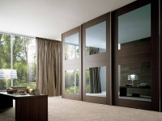
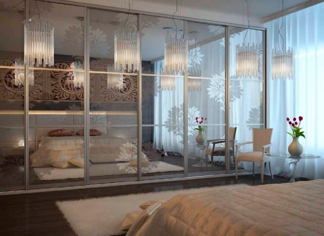

Современные апартаменты не могут обойтись без зеркал и шкафов, их размещают в гостиной, детской, прихожей и спальне. Если ранее шкаф и зеркало были отдельными предметами интерьера, то сейчас их совместили и вполне удачно. Шкафы-купе с зеркальными фасадами приобрели популярность, поскольку они не только практичны, но и могут помочь сэкономить пространство. Этот предмет мебели идеален для размещения большого количества вещей в условиях ограниченного пространства. Кроме того, его можно разместить в той зоне, которую просто невозможно рационально использовать. Благодаря зеркалам на дверцах, комната преображается и визуально расширяется.
Плюсы и минусы
Зеркальный шкаф-купе имеет несколько преимуществ:
- расширяет границы помещения;
- делает комнату более светлой, рассеивая освещение;
- придают оригинальность.
Разглядывая фото зеркальных шкафов-купе, для того чтобы сделать заказ, следует узнать об одном недостатке – необходимости постоянного тщательного ухода за поверхностями изделия. Важно постоянно избавлять фасады от пятен, которые остаются от пальцев рук, особенно если вы ставите зеркальный шкаф-купе в прихожую.
Ранее к числу недостатков относилась и травмоопасность зеркальных панелей, но в настоящее время эту проблему удалось решить. Сейчас в производстве шкафов-купе с зеркальными дверями используются довольно прочные глянцевые поверхности, толщина которых минимум 4 мм. Кроме того, зеркальные фасады надежно держатся в деревянных рамах. Случаи, когда зеркальная панель разбивается, довольно редки, даже если это произойдет, она не рассыпается на осколки, а останется в раме. Эффект обеспечен защитной пленкой. Вывод из всего вышесказанного – купить зеркальный шкаф-купе стоит.
Где разместить и заказать?
Уместно установить зеркальный шкаф-купе в спальню, гостиную или даже коридор. Такая мебель впишется в классический стиль или минимализм, но это не значит, что в другом стиле она будет смотреться плохо. При большом желании можно заказать шкаф-купе зеркальный с рисунком, что придаст апартаментам оригинальности.
Если вы выберете модель, то цену зеркального шкафа-купе можно определить с помощью специального онлайн конструктора, размещенного на сайте фабрики изготовителя. Там вы сможете самостоятельно создать эскиз, увидеть ориентировочную стоимость и отправить заказ нам. Мы реализуем вашу мечту.
{kind=link}